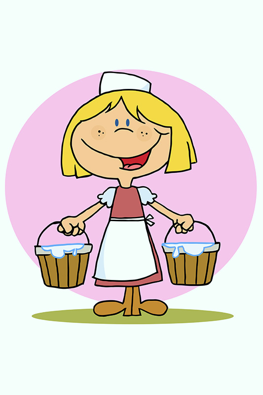

Read the interesting Stories..👓
1. The Needle Tree
There were once two brothers who lived at the edge of a forest. The elder brother was very mean to his younger brother. He ate up all the food and took all his brother’s good clothes. One day, the elder brother went into the
forest to find some
firewood to sell in the market. As he went around, chopping the branches of tree after tree, he came upon a magical tree. The tree said to him, ‘Oh kind sir, please do not cut my branches. If you spare me, I will give you golden apples’. The
elder brother agreed, but was disappointed with the number of apples the tree gave him. Greed overcame him, and he threatened to cut the entire trunk, if the tree didn’t give him more apples. The magical tree, instead, showered upon the elder
brother, hundreds upon hundreds of tiny needles. The elder brother lay on the ground crying in pain as the sun began to lower down the horizon.
The younger brother grew worried and went in search of his elder brother. He found him laying in pain near the tree, with hundreds on needles on his body. He rushed to his brother and removed each needle with painstaking love. After he
finished, the elder brother apologised for treating him badly and promised to be better. The tree saw the change in the elder brother’s heart, and gave them all the golden apples they could ever need.
Moral Of The Story
It is important to be kind and gracious, as it will always be rewarded.
2. The Milkmaid and Her Pail

Patty the milkmaid had finished milking her cow, and had two full pails of fresh creamy milk. She put both pails of milk on a stick and set off to the market, to sell them. Along the way, she started to think of all the milk
in her pails, and the money she would get for them.
“Once I get the money, I’ll buy a chicken,” she thought. “The chicken will lay eggs and I will get more chickens. They’ll all lay eggs, and I can sell them for more money. Then, I’ll buy the house on the hill and be the envy of everyone in the
village. They’ll ask me to sell the chicken farm, but I’ll toss my head like ‘this’, and refuse”. So saying, Patty, the milkmaid tossed her head, and the pails of milk fell. The milk spilled onto the ground, and all Patty could do was cry.
Moral Of The Story
Do not count your chickens before they hatch.
3. The Tale of the Pencil
Raj was upset because he had done poorly in his English test. His grandmother sat beside him, and gave him a pencil. A puzzled Raj looked at his grandma and said he didn’t deserve a pencil after his performance in the test. His grandma explained, ‘You can learn a great many things from this pencil because it is just like you. It experiences a painful sharpening, just the way you have experienced the pain of not doing well on your test. However, it will help you be a better student. Just as all the good that comes from the pencil is from within itself, you will also find the strength to overcome this hurdle. And finally, just as this pencil will make its mark on any surface, you too shall leave your mark on anything you choose to’. Raj was immediately consoled and promised himself that he would do better.
Moral Of The Story
We all have the strength to be who we wish to be.